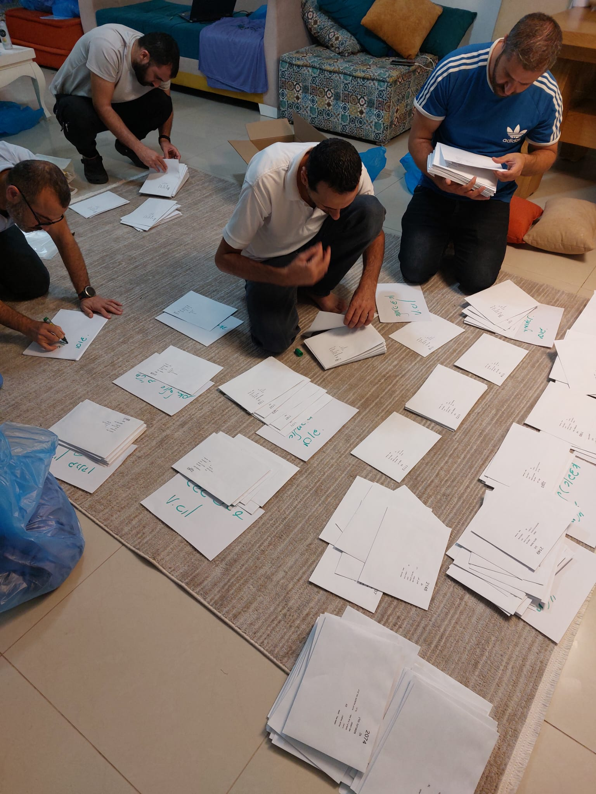
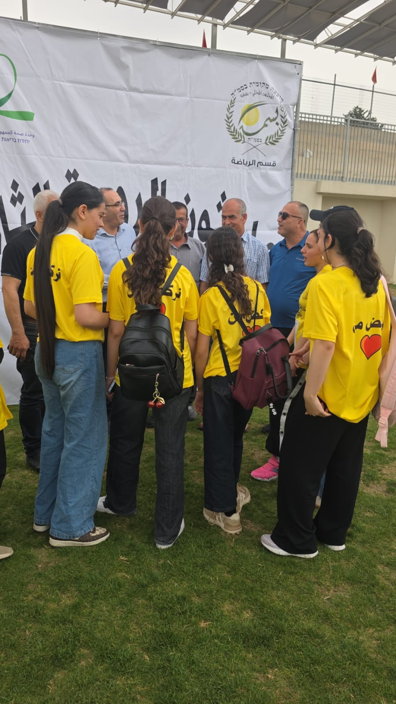
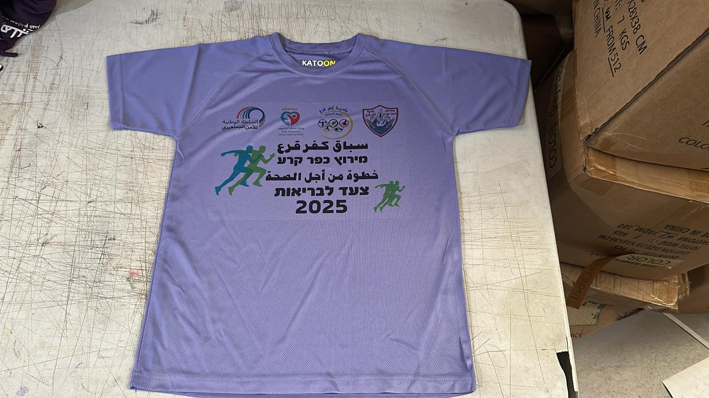
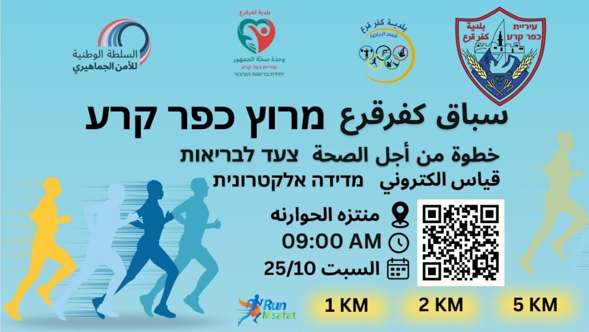
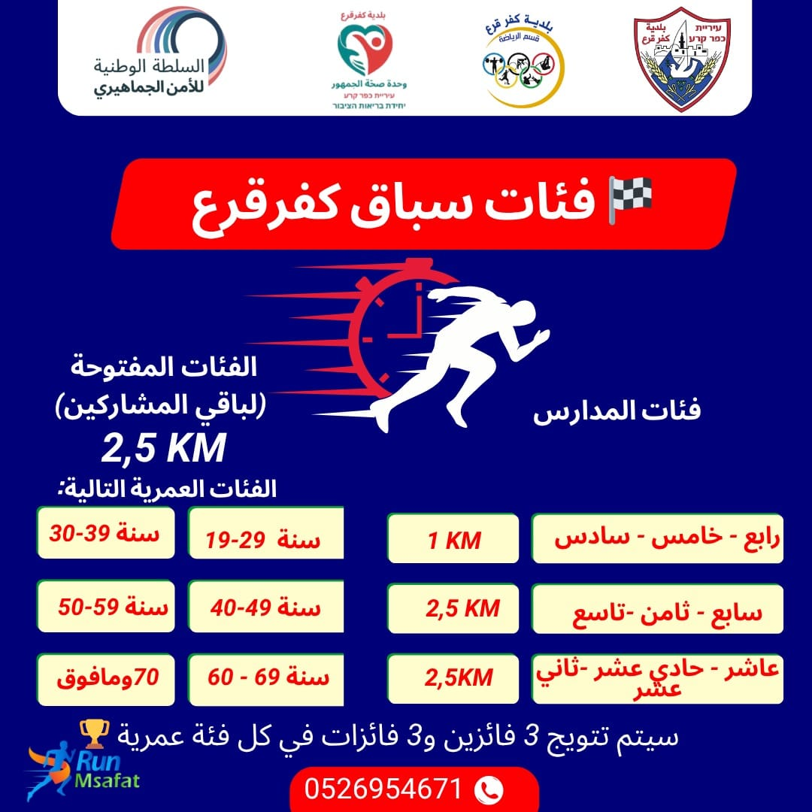
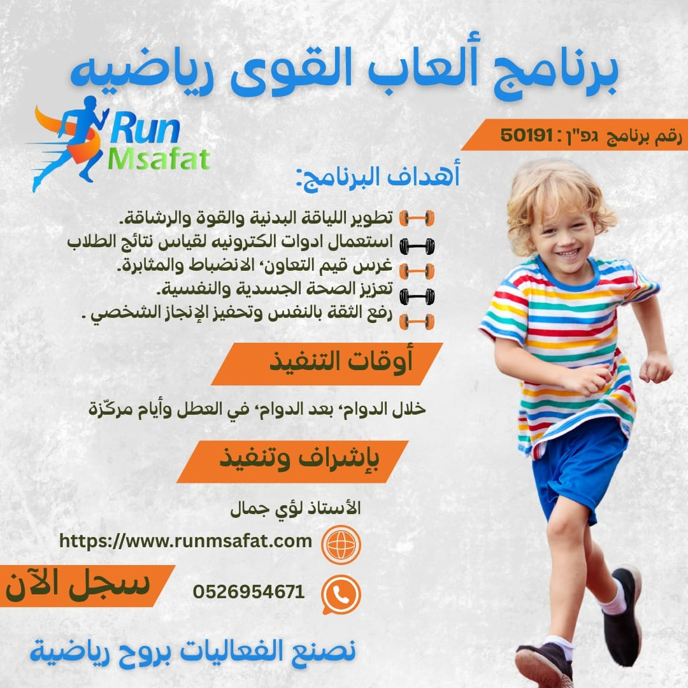

اختر تحدّيك
اطّلع على برنامج اليوم، واستعد للانطلاق.
السبت 14 نوفمبر 2026
خطوة نحو الصحة
بتنظيم جمعية أمانينا والنادي الرياضي، بمشاركة بلدية عرابة – قسم الصحة.
من أجواء سباقاتنا
حماس الصغار، فرحة الوصول، وذكريات بتجمعنا.
موعدك مع التحدّي
لطلاب صفوف الخامس والسادس في مدارس عرابة.
معاينة فقط؛ شغّل الخادم لحفظ التسجيلات وعرضها للأدمن.
لا توجد سباقات في هذه الفئة حاليًا.
سهل البطوف — افتح Waze للوصول إلى نقطة التجمّع.
من قلب مجتمعنا
على دراجاتنا، نجتمع ونصنع ذكريات جميلة.
حكاية بالصورة والحركة
لحظات من المسيرة، وروح المشاركة التي تجمعنا.
اضغط تشغيل لمشاهدة الفيديومن قلب مجتمعنا
خطوات تجمعنا، وحماس يبقى في الذاكرة.
حكاية بالصورة والحركة
من الاستعداد إلى خط الانطلاق، لحظات من الروحة.
اضغط تشغيل لمشاهدة الفيديوحركة تجمعنا

Run Msafat منصة تجمع محبّي الجري، وتسهّل اكتشاف السباقات والتسجيل فيها.
نؤمن أن البداية متاحة للجميع، من الجري العائلي إلى تحدّي المسافات الطويلة. اختر تجربتك، سجّل مشاركتك، واستعد للقاء مجتمع يشاركك الحماس.
من حكايات الجري في مجتمعنا
لحظات من فعاليات الجري: لقاء، تنظيم، وروح فريق.
صور وفيديوهات وإعلانات شاركها المنظّم.






من الاختيار إلى خط البداية
سجّل في سباق البطوف عرابة 2026.
اترك لنا التفاصيل، وجهّز حذاءك.
اطّلع على برنامج اليوم، واستعد للانطلاق.
أدخل بيانات الطالب، مقاس البلوزة وموافقة ولي الأمر.
تذكير قبل السباق بـ24 ساعة بعد تفعيل خدمة الإرسال.